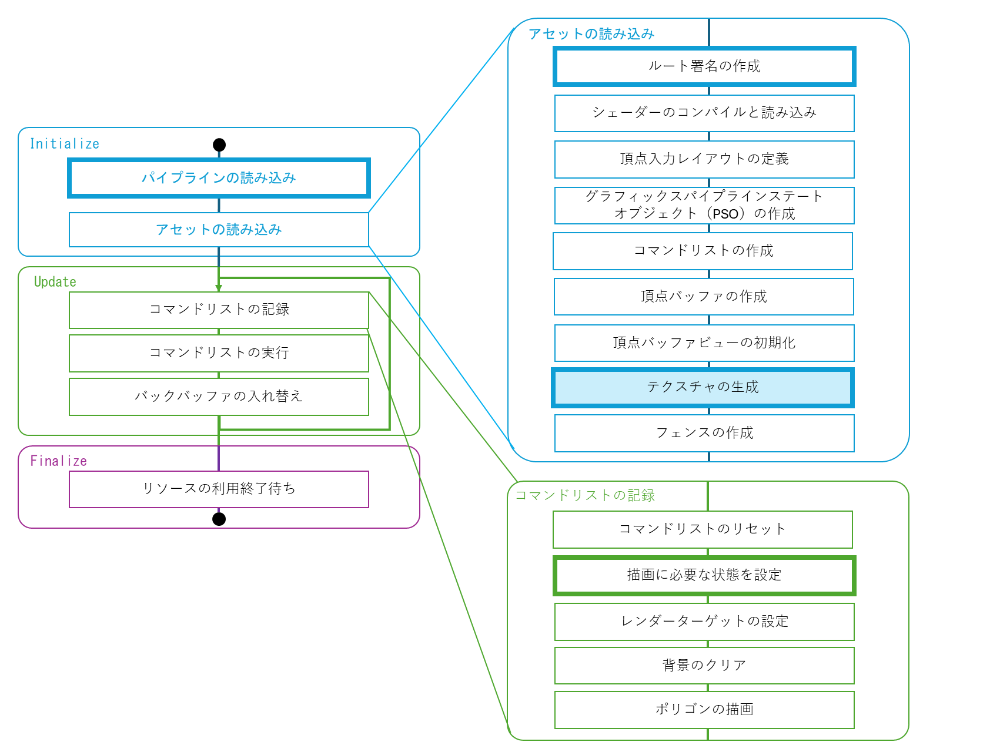

■はじめに
今回はポリゴンにテクスチャを貼ってみます。
ソースコードは、GitHubに上がっているものを見てもらえればと思います。
■今回の流れ
今回はポリゴンにランダムな色のテクスチャを貼ってみます。 テクスチャを貼る際に重要な要素としてはルート署名があります。 ルート署名でテクスチャのリソースを指定したり、サンプラーを記述します。
今回の流れは大きく変わりません。頂点バッファーを作成した後にテクスチャを作成する処理が追加されます。 その他は、今までに記載した部分に変更を加えていくことが多いです。
太文字の部分が今回の変更点で、色がついている部分が今回の追加部分です。

■ テクスチャを読み込むシェーダー
ピクセルシェーダー
分かりやすい変更点としては、シェーダーでテクスチャ（画像）を読み込みます。
テクスチャを読み込むには、テクスチャのオプジェクトで、Sampleメソッドを使います。
今までは色の情報を直接出力していましたが、テクスチャを読み込んた値の色と置き替えます。
引数としては、読み込み方を指定するサンプラーのオブジェクトと、
どの場所の画像を読み込むのかを指定するテクスチャ座標を与えます。
[shaders.hlsl]
テクスチャやサンプラーのオブジェクトは、シェーダーファイル内で、グローバスオブジェクトとして宣言します。
ここで「register」というキーワードを使って、どのレジスタに割り当てるかを指定します。
テクスチャはt、サンプラーはsというレジスタに割り当てられることが決まっています。
テクスチャやサンプラーは複数もてるので、それらを区別するためにレジスタに番号を付けてしています。
番号は0から始まります。それぞれの値の上限はぼちぼちありますが、しばらく気にしなくて良いでしょう。
[shaders.hlsl]
頂点シェーダー
もう1つのピクセルシェーダーのへの入力であるテクスチャ座標は、頂点シェーダーから渡されます。
頂点シェーダーが出力する構造体を修正して、色からテクスチャ座標を出力するようにします。
テクスチャ座標の出力では、「TEXCOORD」のセマンティックを使います。TEXCOORDnに続いて番号を
指定することで、複数のテクスチャ座標を出力できます。
[shaders.hlsl]
頂点シェーダーでは、入力から色をコピーしていたものをテクスチャ座標に置き替えます。
したがって、頂点シェーダーにテクスチャ座標を入力するのが、秘儀に必要な作業になります。
[shaders.hlsl]
■ 頂点データへのテクスチャ座標の導入
頂点シェーダーにデータを渡すのを決めるのは、頂点レイアウトです。
入力要素記述子を差し替えて、色ではなくテクスチャ座標を渡すようにします。
まず、CPU側の頂点データの構造体を書き換えます。
整数で色を指定したメンバーを「XMFLOAT2」の「テクスチャ座標」に置き替えます。
[Appliaction.h]
次にD3D12_INPUT_ELEMENT_DESC構造体を書き換えます。 今までの色のメンバーをテクスチャ座標に置き換えます。具体的には、セマンティック文字列をTEXCOORDに、 フォーマットをDXGI_FORMAT_R32G32_FLOAT（2成分の浮動小数点数）に変更します。
[Appliaction.cpp]
最後に、頂点データを作成するときに、色のメンバーに値を代入していた部分を、テクスチャ座標に変更します。
今回は、使わない部分が発生してしまいますが、三角形の形状に重ねたようなテクスチャ座標を設定したいと思います。
具体的なテクスチャ座標の値は、次のように設定されます。
[Appliaction.cpp]
■ テクスチャデータ
これで、テクスチャ座標のデータは適切に流され、ピクセルシェーダーでテクスチャを読み込む準備が整いました。
次は、テクスチャデータを作成します。
テクスチャデータは、テクセルごとの色情報の配列のデータと、そのデータが画像であってシェーダーで読み込めることを示すメタデータで構成されます。
メタデータは、SRV(Shader Resource View)というスクリプタヒープに登録されるデスクリプターの1つで、
テクスチャのデータアドレスやフォーマットなどのテクスチャデータの情報を格納します。
メンバー変数
テクスチャの色情報は、頂点バッファーと同じようにID3D12Resourceインターフェイスのリソースとして扱われます。
アプリケーションのメンバー変数として登録します。
[Appliaction.h]
また、SRVのデスクリプターヒープも、RTVのデスクリプターと同じように、メンバー変数として登録します。
[Appliaction.h]
テクスチャリソースの確保
テクスチャリソースを作成します。
D3D12_RESOURCE_DESC構造体を使って、テクスチャの大きさやフォーマット、使用法などを指定します。
今回は、[0,255]の8ビットの4成分で、256平方のテクスチャを作成します。
テクスチャ記述子とメモリの確保の仕方のヒーププロパティを設定して、
CreateCommittedResourceメソッドでテクスチャリソースを作成します。
[Appliaction.cpp]
テクスチャデータの作成
次に、テクスチャをランダムな色で埋め尽くしましょう。
テクスチャに値を記録する方法はいくつかあるのですが、今回は、別のテクスチャにデータを記録し、
それをテクスチャリソースにコピーする方法を取ります。
シェーダーで読み込めるテクスチャのリソースのヒープにD3D12_HEAP_TYPE_DEFAULTを指定しましたが、
この設定はテクスチャのメモリに直接書き込むことはできません。
書き込むことができるヒープであるD3D12_HEAP_TYPE_UPLOADを指定したテクスチャアップロードヒープというテクスチャリソースを作成し、
そこにテクスチャデータを書き込んでから、テクスチャリソースにコピーします。
先ずは、テクスチャアップロードヒープのリソースを保持する変数を用意しておきます。
[Appliaction.cpp]
D3D12_HEAP_TYPE_UPLOADを指定したヒーププロパティでアップロード用のテクスチャリソースを作成します。
[Appliaction.cpp]
次に、ランダムな色のデータを用意して、そのアドレスやサイズをD3D12_SUBRESOURCE_DATAに設定して、
アップロード用のテクスチャリソースにコピーします。
実際の処理は、d3dx12.hライブラリのUpdateSubresources関数を使ってコピーを行っています。
行っていることはリソースをCPUがアクセスできるメモリにマッピングして、その場所にデータをコピーして転送しています。
時間がある時に、コードを1通り追っておくと良いでしょう。
[Appliaction.cpp]

ランダムな色の生成は、C++のSTLの乱数ライブラリを用いて256^3の一様乱数として生成しています。
[Appliaction.cpp]
SRVヒープ
テクスチャリソースを作成したら、SRVヒープにテクスチャリソースのデスクリプターを登録します。
テクスチャリソースのデスクリプターは、D3D12_SHADER_RESOURCE_VIEW_DESC構造体で作成します。
テクスチャのフォーマットや、テクスチャの型、テクスチャのミップマップレベルなどを指定して、
CreateShaderResourceViewメソッドで生成します。
[Appliaction.cpp]
テクスチャデータの転送待ち
あと大事なことは、テクスチャデータの転送が終わるまで待つことです。
テクスチャデータの転送は、GPUが行うので、CPUがGPUの処理が終わるのを待つ必要があります。
今までに待つ処理はありましたが、実際にはコマンドリストをすぐに閉じてしまっていました。
これを最初に閉じるのを止めて、テクスチャデータの転送を記述した後に閉じて処理を待つことで、
テクスチャデータがGPUが参照できるようになってから先に進みます。
今まで閉じていた処理を削除します（このプロジェクトではコメントアウトにしました）。
[Appliaction.cpp]
テクスチャのコピーに関する処理を追加した後にコマンドリストを閉じて、 ExecuteCommandListsメソッドでコマンドリストを実行します。
[Appliaction.cpp]
■ ルート署名
テクスチャ座標を設定して、テクスチャデータを作成しました。
まだ行っていないことは、シェーダーのレジスタ番号とテクスチャデータを結びつけることです。
その情報は、ルート署名に記述します。
ルート署名は、シェーダーに渡すデータの構造を定義します。
ルート署名のパラメーターとしてシェーダーのレジスタ番号を指定するのですが、
複雑な設定耐えられるように、デスクリプターレンジという範囲を指定する機能を使ってレジスタ番号を登録します。
また、デスクリプターレンジもルートパラメーターという構造体を通して指定します。
サンプラーは、ルート署名記述子から個数と配列の形で指定できます。
最初にルートシグネチャのバージョン管理を行います。
ルートシグネチャは1.1が執筆時点で最新で、1.0との違いは、デスクリプターレンジが静的であれば、
その情報を利用してGPUが最適化を行うことができるという点（らしい）です。
ここでは、バージョン1.1の機能が使えるかチェックして使えないようなら、バージョン1.0を使うようにします。
[Appliaction.cpp]
次に、SRVのデスクリプターレンジを作成して、ルートパラメーターにそれを設定します。 ルートパラメーターでD3D12_SHADER_VISIBILITY_PIXELが設定されています。 これは、テクスチャがピクセルシェーダーでしか使われない（頂点シェーダーで使われない）という事を示しています。
[Appliaction.cpp]
サンプラー記述子もここで作成します。
サンプラー記述子は、テクスチャの座標をどのように取得するかを指定します。
ここでは、フィルタリングをポイント（滑らかな補間がされない）を指定するとともに、
アドレスモードをBORDERにしてテクスチャ座標が[0,1]の範囲の外に出たらD3D12_STATIC_BORDER_COLOR_TRANSPARENT_BLACK（黒）の色になる指定をしています。
フィルタリングを線形補間にすると、拡大した際に滑らかな色の補間がされるようになるので、変えて試してみてください。
[Appliaction.cpp]
今まで作成したルート署名記述子やサンプラー記述子を使って、ルート署名記述子を構成します。
[Appliaction.cpp]
ルート署名記述子をシリアライズしてバイナリデータ（署名）を作成したら、その署名を使ってルート署名を作成します。
[Appliaction.cpp]
dxguidライブラリの組み込み
さて、実際に組み込んで見たら、ライブラリが足りないと言われたので、dxguidライブラリを組み込みました。
[framework.h]
■ 描画コマンド
テクスチャのバインド
後は、メインループでテクスチャをバインドして描画するだけです。 ルート署名の設定自体は行っていますが、実はテクスチャのデスクリプターヒープとシェーダーのレジスタ番号が結びついていません。 そのため、ルートデスクリプターテーブルを使って、デスクリプターヒープとレジスタ番号を結びつけます。 下の図は、オブジェクトを生成するための構造体の関係なのでオブジェクト間の関係とずれていますが、 行っていることは、テクスチャのSRVのハンドル（アドレスと同じような情報）をルートデスクリプターテーブルに登録することで、 テクスチャのデスクリプターヒープとレジスタ番号を結びつけています。
実際に行うのは、SetGraphicsRootDescriptorTableメソッドを使って、 ルートデスクリプターテーブルに登録したデスクリプターヒープのGPUメモリのハンドルを設定します。
[Appliaction.cpp]
■ さいごに
ランダムな模様なので画像をはったというイメージから遠いですが、テクスチャをはったポリゴンが表示されました。
次は3D描画でしょうか。